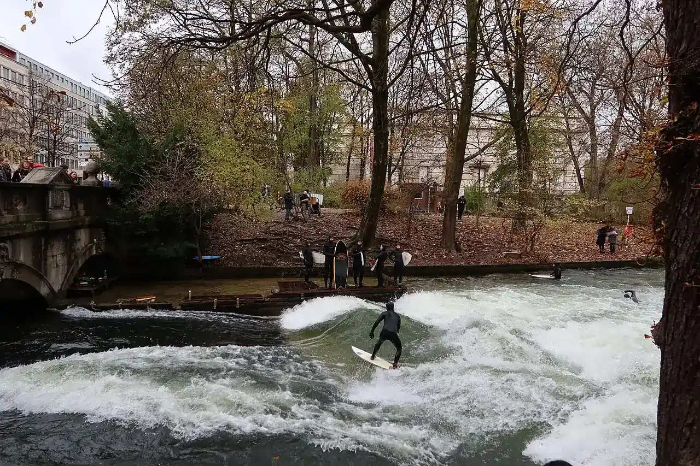

Eisbachwelle
Munich, Bavière, Allemagne · surf

Vague stationnaire sur un bras de rivière qui traverse le Jardin anglais, en plein centre de Munich. Les surfeurs s’y relaient toute l’année sous les yeux des passants : une icône du surf de rivière.
- Lieu
- Munich, Bavière, Allemagne
- Niveau
- Expert
- Activités
- surf
- Type d'eau
- inland
- Coordonnées
- 48.14, 11.59 (position approximative du secteur)
Dangers à connaître
- Courant très rapide et froid, fond peu profond avec blocs de béton.
- Réservé aux surfeurs expérimentés. La ville interdit de se baigner et de nager à l’Eisbachwelle.
Le conseil d'Ocean Buddy
Regarde d’abord les surfeurs depuis le pont. Une leash à largage automatique est exigée par la ville, et le surf est interdit à partir de 22 h : les règles peuvent changer selon les décisions de la ville.
Ouvrir dans Ocean Buddy Télécharger sur l'App Store
Source : Fiche Ocean Buddy · septembre 2026 · à vérifier localement.